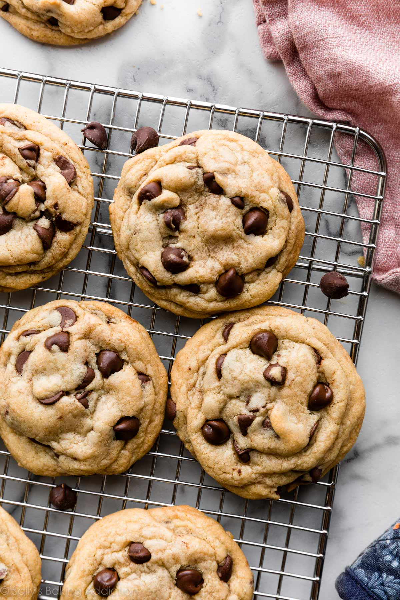

Chocolate Chip Cookies!

GF chocolate chip cookie made with instant vanilla pudding!
Ingredients:
- 1 cup softened butter
- 3/4 cup packed brown sugar
- 3/4 cup white sugar
- 3.5 oz package of instant vanilla pudding
- 3 large eggs
- 1 tsp vanilla extract
- 2 3/4 cups of your fave GF flour
- 1 tsp baking soda
- 1 package of your fave chocolate chips (milk or semisweet)
Steps:
- Preheat oven to 375 degrees F (190 degrees C).
-
In a mixing bowl, cream butter and sugars. Add pudding mix, eggs and
vanilla. Combine flour and baking soda; add to creamed mixture and
mix well. Fold in chocolate chips.
-
Drop by teaspoonfuls onto ungreased baking sheets. Bake for 10 to 12
minutes or until lightly browned.